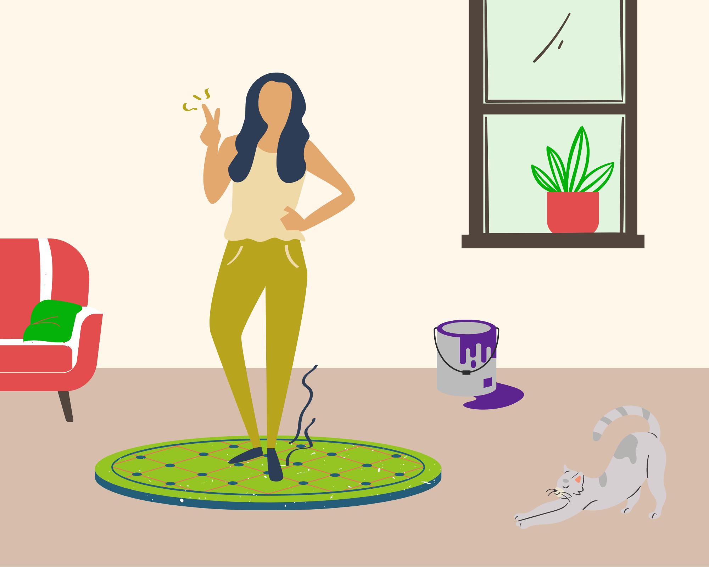
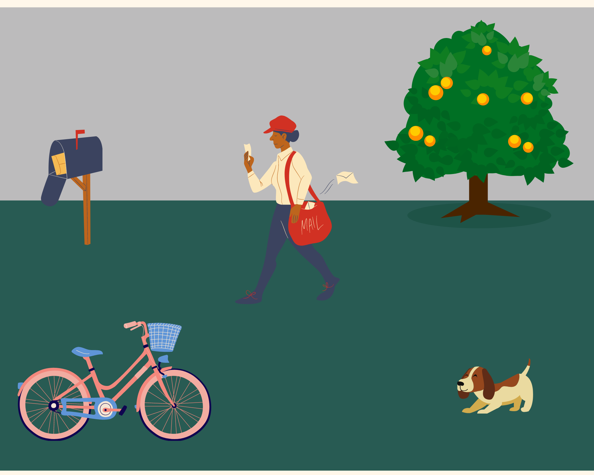

<!DOCTYPE html>
<html>

<head>
    <title>My experiment</title>
    <!-- Here the jspsych libraries are being imported inside the webpage so that
    we can use functions from these libraries in our code. -->
    <script src="jspsych-6.3.1/jspsych.js"></script>
    <script src="jspsych-6.3.1/plugins/jspsych-html-keyboard-response.js"></script>
    <script src="jspsych-6.3.1/plugins/jspsych-image-keyboard-response.js"></script>
    <script src="jspsych-6.3.1/plugins/jspsych-audio-keyboard-response.js"></script>
    <script src="jspsych-6.3.1/plugins/jspsych-preload.js"></script>
    <script src="jspsych-6.3.1/plugins/jspsych-html-button-response.js"></script>
    <script src="jspsych-6.3.1/plugins/jspsych-fullscreen.js"></script>
    <script src="jspsych-6.3.1/plugins/jspsych-call-function.js"></script>
    <script src="jspsych-6.3.1/plugins/jspsych-webgazer-init-camera.js"></script>
    <script src="jspsych-6.3.1/plugins/jspsych-webgazer-calibrate.js"></script>
    <script src="jspsych-6.3.1/plugins/jspsych-webgazer-validate.js"></script>
    <script src="js/webgazer.js"></script>
    <script src="jspsych-6.3.1/extensions/jspsych-ext-webgazer.js"></script>

    <!-- This document sets up the default style of the webpage from a linked css file -->
    <link href="jspsych-6.3.0/css/jspsych.css" rel="stylesheet" type="text/css">

    <style>
        * {
            max-width: 100%;
        }
        
        img {
            max-width: 96%;
            max-height: 96vh;
            cursor: none;
        }
    </style>

</head>

<body></body>
<script>
    var timeline = [];

    // var consent = {
    //     type: 'html-button-response',
    //     stimulus: `
    //   <p>You can elect whether to include your data in our research dataset.</p>
    // `,
    //     choices: ['Incude my data', 'Do not include my data'],
    //     data: {
    //         question: 'consent'
    //     }
    // }


    // var precheck_0 = {
    //     type: 'html-button-response',
    //     stimulus: `
    //   <p>This experiment uses your camera for eye tracking.</p>
    //   <p>No video is saved from this experiment. The only data recorded are predictions about where you are looking.</p>
    //   <p>Before we begin, there are a few things to do that can improve the accuracy of the eye tracking.</p>
    // `,
    //     choices: ['Let\'s go!'],

    // }

    // var precheck_1 = {
    //     type: 'html-button-response',
    //     stimulus: `
    //   <p>If you wear glasses and can complete the task without them, please remove your glasses.</p>
    // `,
    //     choices: ['OK'],
    // }

    // var precheck_2 = {
    //     type: 'html-button-response',
    //     stimulus: `
    //   <p>Please close additional browser tabs and apps running in the background.<br>The eye tracker works best when there are fewer things running at the same time.</p>
    // `,
    //     choices: ['OK'],
    // }

    // var precheck_3 = {
    //     type: 'html-button-response',
    //     stimulus: `
    //   <p>Try to avoid bright lights behind you.<br>The eye tracker works best if your face is well lit from the front.<br>If you can, adjust the lighting in your room.</p>
    // `,
    //     choices: ['OK'],
    // }

    // var camera_instructions = {
    //     type: 'html-button-response',
    //     stimulus: `
    //   <p>In order to participate you must allow the experiment to use your camera.</p>
    //   <p>You will be prompted to do this on the next screen.</p>
    // `,
    //     choices: ['Click to begin'],
    // }

    // var init_camera = {
    //     type: 'webgazer-init-camera'
    // }

    // var main_instructions = {
    //     type: 'html-button-response',
    //     stimulus: `
    //   <p>Now you'll complete a series of calibrations and validations.</p>
    //   <p>The calibration will be reset after each round, so it is OK to move a little bit<br>in between the end of a validation and the start of the next calibration.</p>
    //   <p>Please keep your head still during each round.</p>
    // `,
    //     choices: ['Got it'],
    // }

    // var main_instructions_2 = {
    //     type: 'html-button-response',
    //     stimulus: `
    //   <p>During the calibration phase, please look at each dot and click on it.</p>
    //   <p>During the validation phase, just look at each dot while it is on the screen.</p>
    // `,
    //     choices: ['Got it'],
    // }

    // var fullscreen_enter = {
    //     type: 'fullscreen',
    //     fullscreen_mode: true

    // }

    // var calibration_instruction = {
    //     type: 'html-button-response',
    //     stimulus: `
    //   <p>Calibration phase next.</p>
    //   <p>Click on the dots.</p>
    // `,
    //     choices: ['Got it'],
    //     post_trial_gap: 1000
    // }

    // var calibration = {
    //     type: 'webgazer-calibrate',
    //     calibration_points: jsPsych.timelineVariable('calibration_points'),
    //     repetitions_per_point: jsPsych.timelineVariable('repetitions_per_point'),
    //     randomize_calibration_order: true,
    // }

    // var validation_instruction = {
    //     type: 'html-button-response',
    //     stimulus: `
    //   <p>Validation phase next.</p>
    //   <p>Look at the dots.</p>
    // `,
    //     choices: ['Got it'],
    //     post_trial_gap: 1000
    // }

    // var validation = {
    //     type: 'webgazer-validate',
    //     validation_points: function() {
    //         return jsPsych.randomization.shuffle([
    //             [25, 25],
    //             [25, 75],
    //             [50, 50],
    //             [75, 75],
    //             [75, 25],
    //             [15, 15],
    //             [15, 85],
    //             [85, 15],
    //             [85, 85],
    //             [37.5, 37.5],
    //             [37.5, 62.5],
    //             [62.5, 37.5],
    //             [62.5, 62.5]
    //         ])
    //     },
    //     validation_point_coordinates: 'percent',
    //     show_validation_data: false,
    //     roi_radius: 150,
    //     time_to_saccade: 1000,
    //     validation_duration: 2000,
    //     save_trial_parameters: [{
    //         validation_points: true
    //     }],
    //     data: {
    //         clicks: jsPsych.timelineVariable('clicks'),
    //         pattern: jsPsych.timelineVariable('pattern')
    //     }
    // }

    // var round_over = {
    //     type: 'html-button-response',
    //     stimulus: `
    //   <p>Round complete.</p>
    //   <p>You can move a little bit, but please try to return you head to the same general location before continuing.</p>
    // `,
    //     choices: ['Got it'],
    //     post_trial_gap: 1000,
    //     on_start: function() {
    //         jsPsych.extensions.webgazer.resetCalibration();
    //     }
    // }

    // var cal_pts_5 = [
    //     [25, 25],
    //     [25, 75],
    //     [50, 50],
    //     [75, 75],
    //     [75, 25]
    // ];
    // var cal_pts_15_spread = [
    //     [25, 25],
    //     [25, 75],
    //     [50, 50],
    //     [75, 75],
    //     [75, 25],
    //     [5, 5],
    //     [5, 50],
    //     [5, 95],
    //     [95, 5],
    //     [95, 50],
    //     [95, 95],
    //     [50, 5],
    //     [50, 95],
    //     [25, 50],
    //     [75, 50]
    // ];
    // var cal_pts_25_spread = [
    //     [5, 5],
    //     [5, 25],
    //     [5, 50],
    //     [5, 75],
    //     [5, 95],
    //     [25, 5],
    //     [25, 25],
    //     [25, 50],
    //     [25, 75],
    //     [25, 95],
    //     [50, 5],
    //     [50, 25],
    //     [50, 50],
    //     [50, 75],
    //     [50, 95],
    //     [75, 5],
    //     [75, 25],
    //     [75, 50],
    //     [75, 75],
    //     [75, 95],
    //     [95, 5],
    //     [95, 25],
    //     [95, 50],
    //     [95, 75],
    //     [95, 95]
    // ]
    // var cal_pts_15_cond = [
    //     [50, 50],
    //     [45, 50],
    //     [55, 50],
    //     [25, 25],
    //     [20, 30],
    //     [30, 20],
    //     [25, 75],
    //     [20, 70],
    //     [30, 80],
    //     [75, 25],
    //     [70, 20],
    //     [80, 30],
    //     [75, 75],
    //     [70, 80],
    //     [80, 70]
    // ]
    // var cal_pts_25_cond = [
    //     [50, 50],
    //     [45, 50],
    //     [55, 50],
    //     [50, 45],
    //     [50, 55],
    //     [25, 25],
    //     [20, 25],
    //     [30, 25],
    //     [25, 20],
    //     [25, 30],
    //     [25, 75],
    //     [20, 75],
    //     [30, 75],
    //     [25, 70],
    //     [25, 80],
    //     [75, 25],
    //     [70, 25],
    //     [80, 25],
    //     [75, 20],
    //     [75, 30],
    //     [75, 75],
    //     [70, 75],
    //     [80, 75],
    //     [75, 70],
    //     [75, 80]
    // ]


    // var cal_and_val_timeline = {
    //     timeline: [calibration_instruction, calibration, validation_instruction, validation, round_over, init_camera],
    //     timeline_variables: [{
    //         calibration_points: cal_pts_5,
    //         repetitions_per_point: 1,
    //         clicks: 5,
    //         pattern: 'spread'
    //     }, {
    //         calibration_points: cal_pts_5,
    //         repetitions_per_point: 3,
    //         clicks: 15,
    //         pattern: 'spread'
    //     }, {
    //         calibration_points: cal_pts_5,
    //         repetitions_per_point: 5,
    //         clicks: 25,
    //         pattern: 'spread'
    //     }, {
    //         calibration_points: cal_pts_15_spread,
    //         repetitions_per_point: 1,
    //         clicks: 15,
    //         pattern: 'spread'
    //     }, {
    //         calibration_points: cal_pts_15_cond,
    //         repetitions_per_point: 1,
    //         clicks: 15,
    //         pattern: 'cond'
    //     }, {
    //         calibration_points: cal_pts_25_spread,
    //         repetitions_per_point: 1,
    //         clicks: 25,
    //         pattern: 'spread'
    //     }, {
    //         calibration_points: cal_pts_25_cond,
    //         repetitions_per_point: 1,
    //         clicks: 25,
    //         pattern: 'cond'
    //     }, ],
    //     randomize_order: true
    // }

    // var glasses_question = {
    //     type: 'html-button-response',
    //     stimulus: `<p>Almost done!</p>
    //   <p>Did you wear glasses while completing the experiment?</p>`,
    //     choices: ['Yes', 'No'],
    //     data: {
    //         question: 'glasses'
    //     }
    // }

    // var add_props = {
    //     type: 'call-function',
    //     func: function() {
    //         jsPsych.data.addProperties({
    //             user_agent: navigator.userAgent,
    //             screen_width_px: window.innerWidth,
    //             screen_height_px: window.innerHeight
    //         })
    //     }
    // }

    // var save_server_data = {
    //     type: 'call-function',
    //     func: function() {
    //         var data = jsPsych.data.get().json();
    //         var xhr = new XMLHttpRequest();
    //         xhr.open('POST', 'php/save_json.php');
    //         xhr.setRequestHeader('Content-Type', 'application/json');
    //         xhr.send(JSON.stringify({
    //             filedata: data
    //         }));
    //     },
    //     post_trial_gap: 1000
    // }

    // var fullscreen_exit = {
    //     type: 'fullscreen',
    //     fullscreen_mode: false

    // }

    // var done = {
    //     type: 'html-button-response',
    //     choices: ['CSV', 'JSON'],
    //     stimulus: `<p>Done!</p><p>If you'd like to download a copy of your data to explore, click the format you'd like below</p>`,
    //     on_finish: function(data) {
    //         if (data.response == 0) {
    //             jsPsych.data.get().localSave('csv', 'webgazer-sample-data.csv');
    //         }
    //         if (data.response == 1) {
    //             jsPsych.data.get().localSave('json', 'webgazer-sample-data.json');
    //         }
    //     }
    // }


    // timeline.push(consent);
    // timeline.push(precheck_0);
    // timeline.push(precheck_1);
    // timeline.push(precheck_2);
    // timeline.push(precheck_3);

    // timeline.push(camera_instructions);
    // timeline.push(init_camera);
    // timeline.push(main_instructions);
    // timeline.push(main_instructions_2);
    // timeline.push(fullscreen_enter);
    // timeline.push(cal_and_val_timeline);
    // timeline.push(glasses_question);
    // timeline.push(add_props);
    // timeline.push(save_server_data);
    // timeline.push(fullscreen_exit);
    // timeline.push(done);


    /* preload images and audio files:
    Here we preload all the additional jpeg and mp4 files for the experiment. This might look different with many more
    files we will have at the end.*/
    var preload = {
            type: 'preload',
            auto_preload: true
        }
        /*this is how you push to timeline array*/
    timeline.push(preload);

    /* define welcome message trial */
    var welcome = {
        type: "html-keyboard-response",
        stimulus: "Welcome to the experiment. Press any key to begin."
    };
    timeline.push(welcome);

    /* define instructions trial */
    var instructions = {
        type: "html-keyboard-response",
        /* Feel free to edit any of the on screen messages like this one */
        stimulus: `
        <p>In this experiment, different scenes will appear in the center 
        of the screen alongside a voice recording that will be played.</p>
        <p>If the sentence is applicable to the scene, 
        press the letter F on the keyboard.</p>
        <p>If the scene seems to not be applicable, press the letter J.</p>             
        <p style="text-align:center">Press any key to begin.</p>
       
      `,
        /* This is just to have a 2 seconds long (2000ms) pause between when they
        press continue and when the experiment starts.*/
        post_trial_gap: 2000
    };
    timeline.push(instructions);

    var fullscreen_enter = {
        type: 'fullscreen',
        fullscreen_mode: true

    }
    timeline.push(fullscreen_enter);

    var test_stimuli = [
        /*critical scenes*/
        {
            scene: 'scene/c1.png',
            stimulus: ['audio/1r.mp3', 'audio/1nr.mp3']
        }, {
            scene: 'scene/c2.png',
            stimulus: ['audio/2r.mp3', 'audio/2nr.mp3']
        }, {
            scene: 'scene/c3.png',
            stimulus: ['audio/3r.mp3', 'audio/3nr.mp3']
        }, {
            scene: 'scene/c4.png',
            stimulus: ['audio/4r.mp3', 'audio/4nr.mp3']
        }, {
            scene: 'scene/c5.png',
            stimulus: ['audio/5r.mp3', 'audio/5nr.mp3']
        }, {
            scene: 'scene/c6.png',
            stimulus: ['audio/6r.mp3', 'audio/6nr.mp3']
        }, {
            scene: 'scene/c7.png',
            stimulus: ['audio/7r.mp3', 'audio/7nr.mp3']
        }, {
            scene: 'scene/c8.png',
            stimulus: ['audio/8r.mp3', 'audio/8nr.mp3']
        }, {
            scene: 'scene/c9.png',
            stimulus: ['audio/9r.mp3', 'audio/9nr.mp3']
        }, {
            scene: 'scene/c10.png',
            stimulus: ['audio/10r.mp3', 'audio/10nr.mp3']
        }, {
            scene: 'scene/c11.png',
            stimulus: ['audio/11r.mp3', 'audio/11nr.mp3']
        }, {
            scene: 'scene/c12.png',
            stimulus: ['audio/12r.mp3', 'audio/12nr.mp3']
        }, {
            scene: 'scene/c13.png',
            stimulus: ['audio/13r.mp3', 'audio/13nr.mp3']
        }, {
            scene: 'scene/c14.png',
            stimulus: ['audio/14r.mp3', 'audio/14nr.mp3']
        }, {
            scene: 'scene/c15.png',
            stimulus: ['audio/15r.mp3', 'audio/15nr.mp3']
        }, {
            scene: 'scene/c16.png',
            stimulus: ['audio/16r.mp3', 'audio/16nr.mp3']
        },
        /*filler scenes*/
        {
            scene: 'scene/f1.png',
            stimulus: ['audio/1f.mp3']
        }, {
            scene: 'scene/f2.png',
            stimulus: ['audio/2f.mp3']
        }, {
            scene: 'scene/f3.png',
            stimulus: ['audio/3f.mp3']
        }, {
            scene: 'scene/f4.png',
            stimulus: ['audio/4f.mp3']
        }, {
            scene: 'scene/f5.png',
            stimulus: ['audio/5f.mp3']
        }, {
            scene: 'scene/f6.png',
            stimulus: ['audio/6f.mp3']
        }, {
            scene: 'scene/f7.png',
            stimulus: ['audio/7f.mp3']
        }, {
            scene: 'scene/f8.png',
            stimulus: ['audio/8f.mp3']
        }, {
            scene: 'scene/f9.png',
            stimulus: ['audio/9f.mp3']
        }, {
            scene: 'scene/f10.png',
            stimulus: ['audio/10f.mp3']
        }, {
            scene: 'scene/f11.png',
            stimulus: ['audio/11f.mp3']
        }, {
            scene: 'scene/f12.png',
            stimulus: ['audio/12f.mp3']
        }, {
            scene: 'scene/f13.png',
            stimulus: ['audio/13f.mp3']
        }, {
            scene: 'scene/f14.png',
            stimulus: ['audio/14f.mp3']
        }, {
            scene: 'scene/f15.png',
            stimulus: ['audio/15f.mp3']
        }, {
            scene: 'scene/f16.png',
            stimulus: ['audio/16f.mp3']
        }
    ];


    /* Trial attempt 1*/
    var attempt1 = {
        type: "audio-keyboard-response",
        prompt: `
          <p>Here is trial 1.
          </p> <p>Listen to the sentence: is that sentence possible with the image you see on the screen?</p>
          </img>
          `,
        stimulus: "audio/1t.mp3",
        choices: ['f', 'j'],
        on_finish: function(data) {
            // Score the response as correct or incorrect.
            if (jsPsych.pluginAPI.compareKeys(data.response, "f")) {
                data.correct = true;
            } else {
                data.correct = false;
            }
        }
    };
    timeline.push(attempt1);

    /*post trial attempt*/
    var postattempt1 = {
        type: "html-keyboard-response",
        stimulus: function() {
            var last_trial_correct = jsPsych.data.get().last(1).values()[0].correct;
            if (last_trial_correct) {
                return "<p>Wrong. There is no fireplace so it is not possible!</p>";;
                // the parameter value has to be returned from the function
            } else {
                return "<p> <strong> Good Job! </strong> </p> <p> There is no fireplace, so it is not possible for the person to light the fire. We will have one more trial. </p> <p> Press any key to continue </p>"
                    // the parameter value has to be returned from the function
            }
        }
    };
    timeline.push(postattempt1);

    var attempt2 = {
        type: "audio-keyboard-response",
        prompt: `
      <p>Here is trial 2.
        </p><p>Listen to the sentence: is that sentence possible with the image you see on the screen?</p>
          </img>
          `,
        stimulus: "audio/2t.mp3",
        choices: ['f', 'j'],
        on_finish: function(data) {
            // Score the response as correct or incorrect.
            if (jsPsych.pluginAPI.compareKeys(data.response, "f")) {
                data.correct = true;
            } else {
                data.correct = false;
            }
        }
    };
    timeline.push(attempt2);

    var postattemtp2 = {
        type: "html-keyboard-response",
        stimulus: function() {
            var last_trial_correct = jsPsych.data.get().last(1).values()[0].correct;
            if (last_trial_correct) {
                return "<p> <strong> Good Job! </strong> </p> <p> There is a postman and the postman can ride the bike. Now that you understand, we will continue with the experiment. Please remember to keep your head as still as possible </p> <p> Press any key to continue </p>";
                // the parameter value has to be returned from the function
            } else {
                return "<p>Wrong. There is a postman and the postman can ride the bike!</p>";
                // the parameter value has to be returned from the function
            }

        }
    };
    timeline.push(postattemtp2);


    function shuffle(a) {
        var j, x, i;
        for (i = a.length - 1; i > 0; i--) {
            j = Math.floor(Math.random() * (i + 1));
            x = a[i];
            a[i] = a[j];
            a[j] = x;
        }
        return a;
    }

    choose = [0, 0, 0, 0, 0, 0, 0, 0, 1, 1, 1, 1, 1, 1, 1, 1]
    shuffle(choose)
    i = 0
    console.log(choose)

    /* First trial [trial0], gets a keyboard response after the audio is presented.*/
    var trials = {
        type: 'audio-keyboard-response',
        stimulus: function() {
            if (jsPsych.timelineVariable('stimulus').length > 1) {
                console.log(jsPsych.timelineVariable('stimulus').length)
                stimulus = jsPsych.timelineVariable('stimulus')[choose[i]]
                i++
            } else {
                console.log(jsPsych.timelineVariable('stimulus').length)
                stimulus = jsPsych.timelineVariable('stimulus')
            }
            return stimulus;
        },
        choices: ['f', 'j'],
        /* How you put the scene inside this trial, this is a html code to embed the image inside the webpage.*/
        prompt: function() {
            prompt = "<p></img></p>"
            return prompt;
        },
        response_ends_trial: true,
        response_allowed_while_playing: false
    };

    var test_procedure = {
        timeline: [trials],
        timeline_variables: test_stimuli,
        randomize_order: true

    }

    timeline.push(test_procedure);


    /* start the experiment */
    jsPsych.init({
        timeline: timeline,
        extensions: [{
            type: 'webgazer'
        }]
    });
</script>

</html>